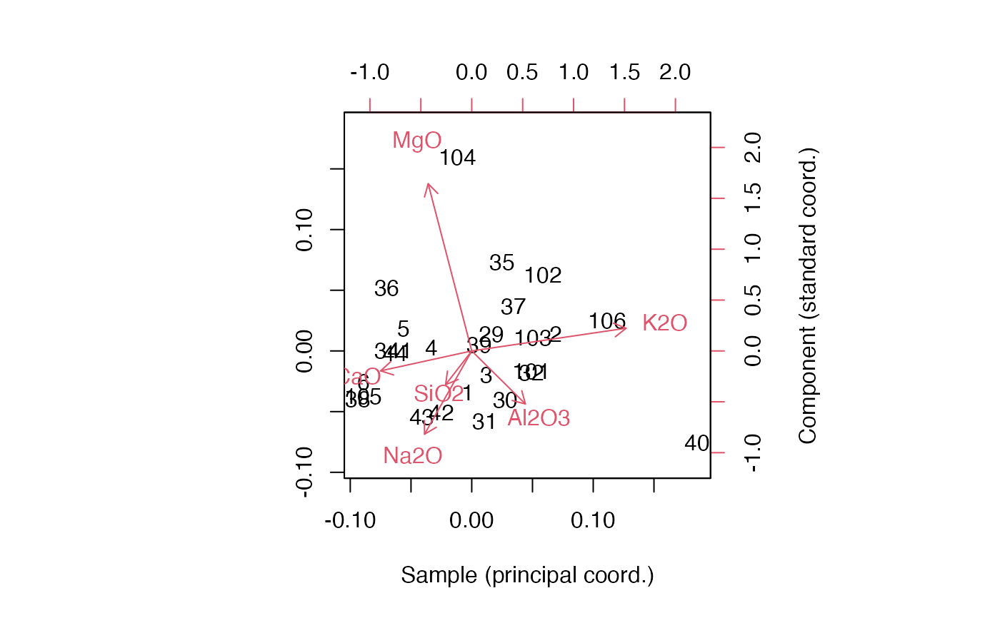

glass.RdSites, types, and compositions of glass samples from archaeological sites in Israel.
data(glass)A tibble with 68 cases and 16 variables:
site at which sample was found
analysis identifier
furnace identifier
type of sample
normalized weight percent oxide of each component
Freestone &al (2000), Table 2.
Chunks of unformed glass from several furnaces found at the primary Byzantine-era site of Bet Eli'ezer, along with samples from other sites with weaker evidence of glass-making (Apollonia and Dor) and and from an Islamic-era site (Banias), were analyzed using X-ray spectrometry to determine their major components.
Baxter & Freestone (2006) used these data to illustrate log-ratio analysis.
Freestone IC, Gorin-Rosen Y, Hughes MJ (2000) "Primary glass from Israel and the production of glass in Late Antiquity and the early Islamic period". La route du verre: Ateliers primaires et secondaires du second millénaire av. J.-C. au Moyen Âge: 65--83. http://pascal-francis.inist.fr/vibad/index.php?action=getRecordDetail&idt=1158762
Baxter MJ & Freestone IC (2006) "Log-Ratio Compositional Data Analysis in Archaeometry". Archaeometry, 48(3): 511--531. doi: 10.1111/j.1475-4754.2006.00270.x
# subset glass data to one site and major components
head(glass)
#> # A tibble: 6 × 16
#> Site Anal Context Form SiO2 TiO2 Al2O3 FeO MnO MgO CaO Na2O
#> <chr> <chr> <chr> <chr> <dbl> <dbl> <dbl> <dbl> <dbl> <dbl> <dbl> <dbl>
#> 1 Bet Eli'e… 1 L14.B1… Chunk 76.0 NA 3.29 0.45 0.1 0.57 5.96 12.1
#> 2 Bet Eli'e… 2 L14.B1… Chunk 73.6 0.16 3.7 0.85 NA 0.68 6.65 13.0
#> 3 Bet Eli'e… 3 L14.B1… Chunk 75.0 0.13 3.36 0.53 NA 0.58 7.27 11.4
#> 4 Bet Eli'e… 4 L14.B1… Chunk 76.0 NA 3.06 0.35 0.1 0.61 7.63 11.3
#> 5 Bet Eli'e… 5 L14.B1… Chunk 75.9 NA 3.13 0.33 NA 0.65 7.49 11.4
#> 6 Bet Eli'e… 6 L14.B1… Chunk 74.4 0.14 3.33 0.45 NA 0.62 7.2 12.6
#> # … with 4 more variables: K2O <dbl>, P2O5 <dbl>, Cl <dbl>, SO3 <dbl>
glass_main <- subset(
glass,
Site == "Bet Eli'ezer",
select = c("SiO2", "Na2O", "CaO", "Al2O3", "MgO", "K2O")
)
# format as a data frame with row names
glass_main <- as.data.frame(glass_main)
rownames(glass_main) <- subset(glass, Site == "Bet Eli'ezer")$Anal
# perform log-ratio analysis
glass_lra <- lra(glass_main, compositional = TRUE, weighted = FALSE)
# inspect LRA row and column coordinates
head(glass_lra$row.coords)
#> LRSV1 LRSV2 LRSV3 LRSV4 LRSV5
#> 1 -0.04710674 -0.71421468 -0.1481599 2.0743704 1.4967846
#> 2 1.06477553 0.29251672 0.7714624 0.8939097 -0.9176510
#> 3 0.18390009 -0.41583336 -0.6223075 -0.6353946 -0.2492736
#> 4 -0.50865018 0.05740889 -0.5126957 -1.0951873 0.7896664
#> 5 -0.86538619 0.38109842 -0.6578733 -0.1765439 0.1192224
#> 6 -1.37184826 -0.53735808 -0.3574370 1.4192209 -1.3690434
glass_lra$column.coords
#> LRSV1 LRSV2 LRSV3 LRSV4 LRSV5
#> SiO2 -0.3208528 -0.4140707 -1.1214862 0.3234513 1.83391575
#> Na2O -0.5797004 -1.0229552 1.7646198 0.7054758 0.07701303
#> CaO -1.1181033 -0.2446487 -0.3429045 -1.7573115 -0.69589148
#> Al2O3 0.6587363 -0.6516092 -1.0691711 1.0070705 -1.40860005
#> MgO -0.5349928 2.0542100 0.1946826 0.6532841 -0.17123886
#> K2O 1.8949130 0.2790737 0.5742595 -0.9319702 0.36480160
# inspect singular values of LRA
glass_lra$sv
#> [1] 0.06502356 0.04802956 0.03826908 0.03063650 0.01432346
# plot samples and measurements in a biplot
biplot(
x = glass_lra$row.coords %*% diag(glass_lra$sv),
y = glass_lra$column.coords,
xlab = "Sample (principal coord.)",
ylab = "Component (standard coord.)"
)
